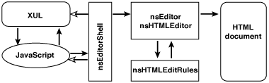

You are here: Editor project page > How the Editor Works
エディタはどのように動作するか
このドキュメントの内容
はじめに
このドキュメントでは、Composer ウィンドウにおいて、エディタがどのようにインスタンス化されイベント処理をするかについて扱います。エディタは、メール作成ウィンドウにおいても非常に よく似た使い方をされており、また多くの組み込みアプリケーションでも参考になるでしょう。 テキスト・ウィジェットのためにエディタがどのように作成されるかについては、詳しくはテキスト・ウィジェットのドキュメントを参照してください。
高位レベルの関係図
エディタ・システムの中でいくつかの主要な部分を、図 1
に示します。この図では、 ユーザー・インターフェース （ 記述言語は XUL と JavaScript です ） 、
nsEditorShell （ ユーザー・インターフェースとエディタ・コア間のインターフェースとなります ） 、そしてエディタ・コア
（文書の型によって動作が異なります）
との間の相互作用を示しています。エディタが、編集されようとしているドキュメント上で動作するのは、この相互作用の後になります。
（
図が、例えばエディタによる全ての操作が元に戻すことのできないトランザクションを通じて生じている事実などのように、いくつかの重要な細かい点を省
いていることに注意してください。 ）

図 1 : composer ウィンドウにおけるエディタ・コンポーネント間の、高位レベルの関係。塗りつぶした矢印は共通した相互作用の経路を示し、 塗りつぶしていない矢印はそれほど重要ではない流れを示します。
この図解のいくつかの点は説明したほうが良いと思われます。
- 第一に、 XUL または JavaScript 間の相互作用は全て nsEditorShell を経由することに注意してください。より低いレベルのエディタ・インターフェースは JavaScript からインターフェース定義言語を通じて操作できるようには （ 未だ ） なっていません。
-
第二に、エディタ・コア （
nsEditorまたはnsHTMLEditor） はnsEditorShellについて何も知らないことに注意してください。 エディタは誰が nsEditorShell を動かしているのかについては知ることができませんし、ある特定のフロントエンドまたは環境に結び付けられているわけではないのです。 - 第三に、編集されているドキュメントはそのドキュメントが編集されているのを知らないことに注意してください。 エディタはドキュメントの上で動作しますが、ドキュメントはエディタについて何も知る必要はありません。
XUL ウィンドウ内におけるエディタのインスタンス化
エディタが仕事をするのは XUL 最上部の <iframe> 要素です。
この <iframe> に読み込まれたドキュメントを監視していて、 ドキュメントの読み込みが完了すると、 読み込まれたドキュメントの上にひとつのエディタをインスタンス化します。これによって
<iframe> コンテントは編集可能になるのです。
<iframe> 内部のドキュメント読み込みを監視するジョブは nsEditorShell という、 JavaScript とエディタ・コアとの間の通信を全て実装しているクラスによって実行されます。 nsEditorShell は
nsIEditorShell という、インターフェース定義言語を通じて JavaScript に公開されるインターフェースを実装しています。 エディタ・シェルは、エディタを適切なタイミングで作成し、エディタ・オブジェクトへの所有参照を保持し、
XUL ウィンドウが閉じられたときに解放します。
注意：私たちは目下のところ、エディタのための特別なタグ、ありきたりですが <editor> という名前のタグへと遷移していくところです。これは実のところ、 JavaScript からエディタを作成するタスクを幾つか引き継いでいる <iframe> そのものです。結果として、
ここのコードの断片のいくつかはコードベースで見られるものとは少々異なっているかもしれません。
それでは、 composer ウィンドウを立ち上げるときにエディタが作成される過程を通してトレースしてみましょう。 関連する XUL の部品は
editor.xul に、そして JavaScript の部品は
editor.js に見つけることができます。
どこかの誰かが、Mozilla に composer ウィンドウを開くように指示を出します。
editor.xulが読み込まれます。editor.xulの中では、<window>タグが読み込み時のハンドラ、onload="EditorOnLoad()"を保持しています。それによってEditorOnLoad()という JavaScript 関数が、 XUL が読み込まれた時に実行されます。-
EditorOnLoad()が呼び出されます。EditorOnLoad()は window.arguments ( 呼び出し側が変数を新規ウィンドウに渡す方法です−読み出したい URL を取得するときにはこれを使います ） を 取得しようとする一方で、EditorStartup()を呼び出し、そこで実際の動作が発生します。EditorOnLoad()は変数を 2 つ渡します。最初の変数はテキスト・エディタを望んでいるのかそれとも HTML エディタなのかを示します （ ここでは'text'か'html'を渡します ） 。 そして二つ目の変数は、その上にエディタを作成したいと望んでいる<iframe>要素です。 ここではdocument.getElementById("content-frame")またはwindow._contentのどちらに渡すこともできるでしょう。 -
EditorStartup()における重要なことが、 editorShell を取得または作成するところから始まります。<editor>タグへの遷移の途中ですから、ここでは 2 つのパターンが見られるでしょう：<editor>バージョン：
<editor>タグは、 nsEditorBoxObject を舞台裏で実際に一つ作成します。 nsEditorBoxObject は nsEditorShell を作成し、 nsEditorShell への所有参照を保持します。 XBL 、 XUL バインディング 、そして nsIEditorBoxObject インターフェースの手品を使って、エディタ要素から editorShell への JavaScript 参照 をelement.editorShell を用いて取得します。そのようにして、どのようにも使える editorShell が手に入ります。<iframe>バージョン：
<editor>タグがない場合には、 JavaScript を組んで editorShell を作成しなければなりません：var editorShell = Components.classes["component://netscape/editor/editorshell"].createInstance();
editorShell = editorShell.QueryInterface(Components.interfaces.nsIEditorShell);こちらでも、今やどのようにも使える editorShell が手に入りました。
-
さて、 editorShell の Init() メソッドを呼び出してセットアップし、 editorShell にどの種類のエディタが望ましいか （ テキストまたは HTML ） を伝え、 webShellWindow でポインタで示して使用できるようにして、 editorShell が存続しているコンテント・ノードを伝えます：
editorShell.Init();
editorShell.SetEditorType(editorType);
editorShell.webShellWindow = window;
editorShell.contentWindow = window._content;webShellWindow（ nsIEditorShell にセットできる属性 ） はトップレベルのウィンドウ属性をポインタで示していて、そこからその中に editorShell が存続している XUL ドキュメントを editorShell が取得できます。 これはユーザー・インターフェースをつつくこと（例えばコマンド状態のメンテナンスや、スロッバーの開始や中止など）ができるようにするためには必要なことです。contentWindow（ nsIEditorShell にセットできる別の属性）は編集可能となる XUL 要素を指します。 [ 注記：<editor>タグがある時点でこのことは既に分かっているので、これを呼び出す必要は取り除けるでしょう。 ] -
EditorStartup() はより重要でない細々とした設定を行ってから、最終的な URL の読み込みに取りかかります。 ここでは最も重要な部分となります。
XUL が構文解析された時、コンテント・フレームにある
src属性はabout:blank（ 標準の ' 空白ページの ' URL ） に設定されていました。 XUL を構文解析する前にそれを設定することはできないのです。そのため、今ここで編集したいページをあらためて読み込む必要があります。読み込む URL をargs要素から取得して、それから読み込みに取りかかります：var url = document.getElementById("args").getAttribute("value");
editorShell.LoadUrl(url);<iframe>内のドキュメント読み込みは、もちろん非同期的に発生するので、 いつドキュメントの読み込みが終了して編集を開始できるようになったかを知る必要があります。nsEditorShell は
<iframe>の上に読み込まれたドキュメントを監視することができます。それはnsIDocumentLoaderObserverを実装しているからであり、 コンテント・ウィンドウに割り当てられたときにドキュメント・ローダとして nsEditorShell そのものを登録したからです。 そのようにして、 nsEditorShell は 開始、進行、そしてドキュメント読み込みの終了のためにコールバックを取得します。注意：これらのコールバックはまた、例えばフレーム・セットのドキュメント、または独自に組み込まれた
<iframe>をもつ HTML ドキュメントなど、親ドキュメント読み込みの結果として読み込まれるサブドキュメントに波及します。この場合には、 注意深く、正しいドキュメントにエディタをインスタンス化する必要があります。 現在では、 composer ウィンドウ一つにつきエディタを一つ持てるだけですが、 将来的には、この制限を緩めることによってフレーム・セット内の全てのサブドキュメントを 同時に編集することが可能になるでしょう。編集したいドキュメントが
nsEditorShell::OnEndDocumentLoad()への読み込みに成功したことを検出します。このドキュメントを実際に編集できるかチェックした後、先へ進んでその上 （nsEditorShell::PrepareDocumentForEditing()の中 ） にあるエディタのインスタンス化に取りかかります。 エディタを作成するのみならず ( これはnsEditorShell::DoEditorMode()を通して生じます ） 、ユーザー・インターフェースのアップデートとユーザー間のやり取りのために様々なリスナーとオブザーバーを接続して、開いたドキュメントのファイル拡張子を格納します。さて、エディタをセットアップして、準備ができました。
エディタの初期化についてひとつ注意しておきたいことは、エディタの
Init()メソッドの中に、 エディタが連動することができるコンテント・ツリーのルートに対応するnsIContent*を渡しておくことです。エディタを nsEditorShell から初期化するときに、 ここでNULLを （ エディタに、ドキュメントの<body>の下にあるもの全てを編集可能であることを伝える ） 渡します。 この変数は エディタがテキスト・ウィジェットの中にあるときにはもっと 重要です。そこでは、変数はウィジェット・コンテントと連動する、親ドキュメントのサブツリーへのポインタを指します。
XUL には、 <editor> 、または <iframe> タグが含まれています。例えば、
<editor type="content-primary" id="content-frame" src="about:blank" flex="1"/>
属性 type="content-primary" はこれをウィンドウのコンテント要素であると識別します。つまり、 window._content から取得したものです。 id 属性、 id="content-frame" があるので、この要素を見つけるのに document.getElementById("content-frame") を用いることができ、 CSS を使ってスタイルを決められます。
エディタの片付け
ウィンドウのデストラクト、それに引き続くエディタの片付けは、以下に挙げた二つの方法で初期化されます。
どちらの場合にも、 JavaScript である EditorCanClose() メソッドが呼び出されて
nsEditorShell にダイアログを表示させてユーザーにドキュメントを保存したいか、変更を破棄したいのか、またはキャンセル したいのかを問い合わせます。キャンセルすると閉じる動作が中断することに注意してください。
-
ユーザーはそれぞれの OS あるいはウィンドウ・マネージャから「閉じる」ウィジェットをクリックします。
この場合、
<window>タグ上のoncloseメソッドが 呼び出されます。 -
ユーザーはファイルメニューから「閉じる」を選択するか、キーのショートカットを利用するか、またはアプリケーションを終了して、全てのウィンドウが閉じるようにします。
それぞれのウィンドウが閉じられる前に、
globalOverlay.js
にある JavaScript コードが
tryToCloseメソッドを各ウィンドウに呼び出そうとします。editor.jsの中では、EditorCanClose()を呼び出すためにこれをセットします。
もしユーザーがドキュメントを保存することを選択するか、あるいは変更を破棄することを選択するなら、
そのときにウィンドウは閉じられます。 nsEditorShell への最後の参照が消えれば （ <iframe> の場合におけるように JavaScript のガーベージ・コレクションの結果として
、または <editor> の場合におけるように nsEditorBoxObject がその参照を解放した結果としても ）
、エディタ上の所有参照を解放します。
エディタのイベント・ハンドリング
エディタの操作はユーザー・イベントへのレスポンスとして発生します：マウス、キー、ドラッグ・アンド・ドロップ、 そして IME （ 国際的なテキスト入力 ） イベント。 これらのイベントを受け取るために、エディタは現在 編集されているドキュメント上にある、幾つかのイベント・リスナーを登録します。さらに、 ユーザー・インターフェースにおけるエディタの動作は XUL と JavaScript を経由して伝達され、 nsEditorShell 上のメソッドを呼び出します。このようなエディタのコマンド・ディスパッチは別々に記述されます。
イベント・リスナーは次のように登録されています：
-
nsHTMLEditor::InstallEventListeners()では、次のようにインストールします。 これらは全種類のエディタ （ すなわち、テキスト・ウィジェット と composer ） についてインストールされます。：nsTextEditorKeyListener(nsIDOMKeyListenerとして )nsTextEditorMouseListener(nsIDOMMouseListenerとして )nsTextEditorFocusListener(nsIDOMFocusListenerとして )nsTextEditorTextListener(nsIDOMTextListenerとして )nsTextEditorCompositionListener(nsIDOMCompositionListenerとして )nsTextEditorDragListener(nsIDOMDragListenerとして )
-
nsEditorShell::PrepareDocumentForEditing()では、マウス・リスナーをインストールします。 このインストールは nsEditorShell が使用されている状況 （ つまり、テキスト・ウィジェット以外 ） においてのみ発生します：nsEditorShellMouseListener(nsIDOMMouseListenerとして )
nsTextEditorKeyListener
このイベント・リスナーはタイピングするときのキー押下と、他の
編集操作 （ バックスペース、削除、エンターまたはリターン ） を扱います。
扱わないと明示してある場合には、どこで通常のタイピング・キーを終了するかを扱う nsHTMLEditor::EditorKeyPress() に渡します。
KeyPress イベントのみに応答することに注意してください：
KeyDown および KeyUp イベントは無視されます。
nsTextEditorMouseListener
マウス・リスナーは真ん中のマウス・ボタン・ペースト （ Unix のコピー／ペースト機能です ） を行うのに使用されます。
これはボタン 2 の MouseClick に対応して生じます。また、 IME の コミットを強制するものです。
nsTextEditorFocusListener
エディタはフォーカスおよびブラー・イベントに応じて、
キャレットまたは選択範囲を、適切に表示するか隠すかします。
nsTextEditorTextListener
nsIDOMTextListener インターフェースのこの実装は IME コードによって用いられています。 HandleText イベントに応じて、エディタはインライン入力の 文字列の構成をセットします。
nsTextEditorCompositionListener
nsTextEditorCompositionListener は IME に関連している別のインターフェース、
nsIDOMCompositionListener を実装します。
これは起動時、終了時、そして現在の構成を問い合わせる
ために IME から呼び出されます。
nsTextEditorDragListener
ドラッグ・リスナーはエディタにおけるドラッグ・アンド・ドロップ・イベントを扱います。
DragGesture のドラッグ開始に応じてドラッグにデータを追加して、
ドロップが DragOver 中に生じる可能性があるかをドラッグに通知し、
DragDrop にデータを挿入することでドロップを扱います。
nsEditorShellMouseListener
これは一風変わったイベント・リスナーです。エディタ内部からというよりは editorShell から
登録されているからです。 [ 注意： これは見栄えが良くないので、エディタからのコールバック上で動作するために
デザインを改めるか、 完全に JavaScript へ移行しなければなりません。 ]
nsEditorShellMouseListener は本質的には
nsEditorShell::HandleMouseClickOnElement を呼び出すようになっており、
ダブルクリックした項目のプロパティ・ダイアログを表示します。
キーを押したときの経路
キー押下がひとたび nsTextEditorKeyListener に達したら何が起こるでしょうか？ ドキュメント内部では結局どのようなことになるのでしょうか？ トレースしてみましょう。
-
nsTextEditorKeyListener::KeyPress()はキー押下イベントを取得します。 通常の文字キーでは、そのイベントはnsHTMLEditor::EditorKeyPress()に降ります。 -
nsHTMLEditor::EditorKeyPress()はキー・イベントから文字コードを取得し、 文字列に入れて、nsHTMLEditor::TypedText()を呼び出します。 このメソッドは単純にnsHTMLEditor::InsertText()を呼び出します。 -
nsHTMLEditor::InsertText()は、スタック・ベースのクラスにあるちょっとした複雑さを隠蔽します。nsAutoPlaceHolderBatchはユーティリティ・クラスで、関数呼び出しでテキスト挿入をラップすることで、選択解除、レイアウト更新 （ ちらつきを防ぐため ） 、そして代替トランザクションのメンテナンスを行います。この代替トランザクションを用いることによって、タイピング・イベントをまとめることが可能になるため、「元に戻す」 動作は キー・ストロークの一連の動作全てをそっくり元に戻します。別のスタック・ベースのクラス、
nsAutoRulesでは、テキスト挿入がnsHTMLEditor::StartOperation()/EndOperation()への関数呼び出しによってラップされます。これらの関数は現在の型付けルール上にあるBeforeEdit()とAfterEdit()を呼び出します。さて、
nsTextRulesInfoを挿入された文字列についての情報で初期化して、 現在の 編集ルール の上にあるWillDoAction()を呼び出します。 テキスト挿入の実装は異なるルール （ プレーンテキスト対 HTML 等 ） の間で異なっているため、 ルール・コード、WillDoAction()内の呼び出しによってもっぱら扱われます。Composer では、
nsHTMLEditRulesを利用しているので、 結局nsHTMLEditRules::WillDoAction()で終了することになります。 テキスト挿入では、これはnsHTMLEditRules::WillInsertText()に降ります。 このコードは最初に選択範囲があれば （ 例えば、テキストを選択してタイプしている場合 ） それを削除します。 それから一般的な挿入前の関数呼び出し、WillInsert()を呼び出します。WillInsert()は 挿入したテキストへのインライン・スタイルをセットアップして、選択範囲をテキストが挿入されるのにもっとふさわしい場所へ移動します。さて、実際にテキストを挿入する準備ができました。一般的な
InsertText()を通り過ぎていることを思い出してください。このコードは、単独の文字を挿入するのと同じように、 長い文字列の貼り付けを取り扱っているのです。 コードはこのようにしてラインブレークにおいて正しいことを行わなければならないため、<pre>セクションに挿入する特別な場合があります。通常の挿入コードにちょっと呼び出しをすると、そのコードはラインブレークを探して入力文字列の間をループして、各テキスト・ランごとに挿入を行い、必要に応じて<br>タグを付けます。キー押下を扱う際に、このコードは単独の文字を挿入するのです。WillDoAction()呼び出しから落ちて出ると、WillDoAction()に立ち寄りますが、これは、テキスト挿入に関しては何も行いません。キー押下時に最後に起こるのは
nsTextEditorKeyListener::KeyPress()がScrollSelectionIntoView() を呼び出すことであり、この関数は、名前から推測されるように、入力されたばかりのテキストが可視となるようにするものです。